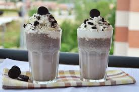
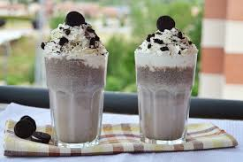

Cookies Đá Xay
Thức uống Cookies Đá Xay là sự kết hợp hoàn hảo giữa hương vị thơm ngon, béo ngậy của bánh cookies hòa quyện cùng sữa tươi, kem tươi và đá xay mát lạnh. Đây là một lựa chọn tuyệt vời để giải nhiệt, thỏa mãn cơn thèm ngọt và mang lại cảm giác sảng khoái, tràn đầy năng lượng.
 


Nguyên liệu
- Bánh cookies: 4–5 chiếc bánh Oreo hoặc loại cookies yêu thích khác (khoảng 50-70g), bẻ nhỏ để dễ xay.
- Sữa tươi không đường: 200ml (sữa tươi tiệt trùng hoặc thanh trùng đều được).
- Kem tươi (Whipping Cream): 50ml (loại có hàm lượng béo từ 35% trở lên để dễ đánh bông và tạo độ béo ngậy).
- Sữa đặc: 20ml (khoảng 1.5-2 muỗng canh, điều chỉnh theo khẩu vị ngọt của bạn).
- Đá viên: Khoảng 200g (đá viên nhỏ hoặc đá bào sẽ giúp thức uống mịn hơn).
- Bột cacao hoặc chocolate vụn: Một ít để trang trí (tùy chọn, tăng thêm hương vị và vẻ đẹp).
- Kem tươi đánh bông: Một ít để trang trí (tùy chọn, tạo lớp kem béo ngậy trên mặt).
Cách pha chế
-
Bước 1: Chuẩn bị nguyên liệu
- Bẻ nhỏ bánh cookies thành các mảnh vụn để máy xay dễ dàng xay nhuyễn.
- Đảm bảo tất cả các nguyên liệu đều đã được làm lạnh để thức uống giữ được độ mát.
-
Bước 2: Xay hỗn hợp đá xay
- Cho cookies đã bẻ nhỏ, 200ml sữa tươi, 50ml kem tươi (whipping cream), 20ml sữa đặc và đá viên vào máy xay sinh tố.
- Đậy nắp và xay nhuyễn hỗn hợp ở tốc độ cao cho đến khi hỗn hợp trở nên mịn, sánh và không còn cục đá lớn. Thời gian xay có thể khoảng 30 giây đến 1 phút tùy công suất máy xay.
- Nếu hỗn hợp quá đặc, có thể thêm một chút sữa tươi. Nếu muốn đặc hơn, thêm một ít đá viên.
-
Bước 3: Trình bày và trang trí
- Đổ hỗn hợp cookies đá xay đã mịn ra ly thủy tinh cao.
- Nếu thích, bạn có thể xịt một lớp kem tươi đánh bông lên trên bề mặt ly.
- Rắc một chút bột cacao hoặc chocolate vụn lên trên lớp kem tươi để trang trí và tăng thêm hương vị chocolate.
-
Bước 4: Thưởng thức
- Dùng muỗng hoặc ống hút khuấy đều trước khi uống để các thành phần hòa quyện vào nhau.
- Thưởng thức ngay khi còn lạnh để cảm nhận trọn vẹn hương vị béo mịn, thơm ngon và mát lạnh của Cookies Đá Xay.
Mẹo nhỏ để Cookies Đá Xay ngon hơn:
- Chọn cookies: Bánh Oreo là lựa chọn phổ biến, nhưng bạn có thể thử với các loại cookies khác như cookies chocolate chip, cookies yến mạch để tạo hương vị riêng biệt.
- Độ lạnh của nguyên liệu: Đảm bảo sữa tươi, kem tươi và sữa đặc đã được làm lạnh kỹ trước khi xay để thức uống giữ được độ mát lâu hơn và không bị tan đá nhanh.
- Tỷ lệ đá: Lượng đá viên có thể điều chỉnh tùy theo sở thích về độ đặc của thức uống. Nếu muốn đặc hơn, dùng nhiều đá hơn.
- Độ ngọt: Điều chỉnh lượng sữa đặc theo khẩu vị cá nhân. Bạn có thể nếm thử hỗn hợp sau khi xay và thêm sữa đặc nếu muốn ngọt hơn.
- Thêm hương vị: Bạn có thể thêm một chút tinh chất vani hoặc một muỗng cà phê bột cà phê hòa tan vào hỗn hợp khi xay để tăng thêm hương vị.
- Trang trí: Ngoài kem tươi đánh bông, bột cacao và chocolate vụn, bạn có thể dùng sốt chocolate, sốt caramel hoặc một chiếc bánh cookies nguyên vẹn để trang trí ly thức uống thêm phần hấp dẫn.
▶️ Xem video hướng dẫn chi tiết
← Quay lại trang chủ
Bình luận và Đánh giá
Đánh giá của bạn
Chưa có bình luận nào.